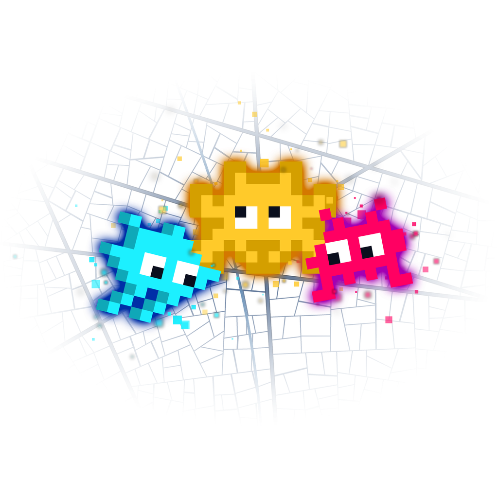

index.tsx ne dessine rien : il redirige tout de suite vers la carte (ou vers la connexion si on n'est pas connecté). Ce qu'on voit au démarrage est l'écran de lancement natif défini dans app.json (fond #0a0f1e, image de 280 px), affiché tant que les polices et les traductions chargent. Sa couleur est fixe : elle ne change pas avec le thème.